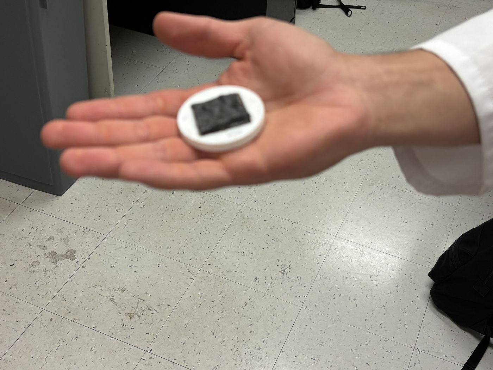
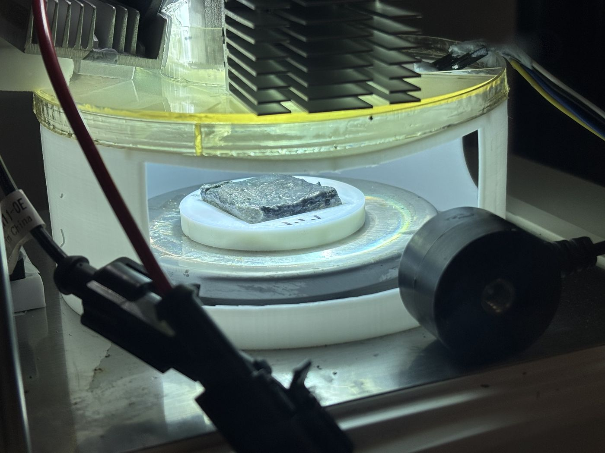
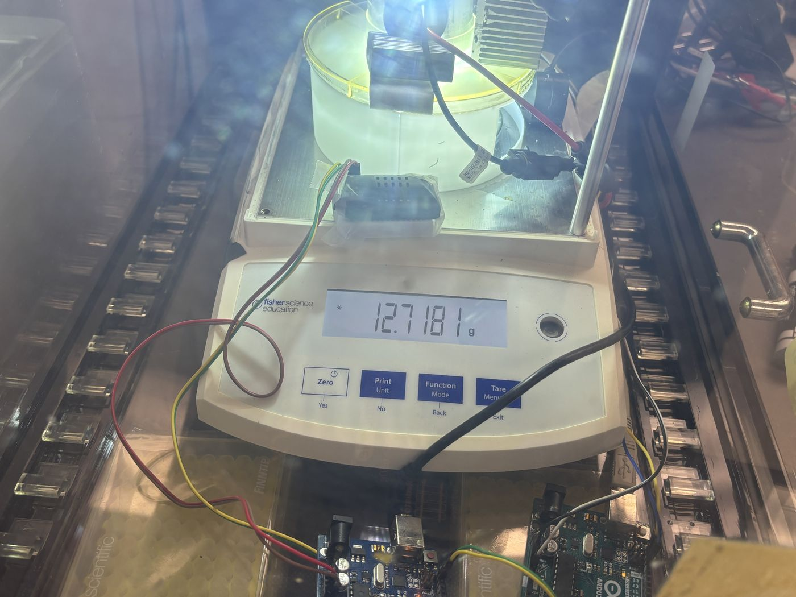
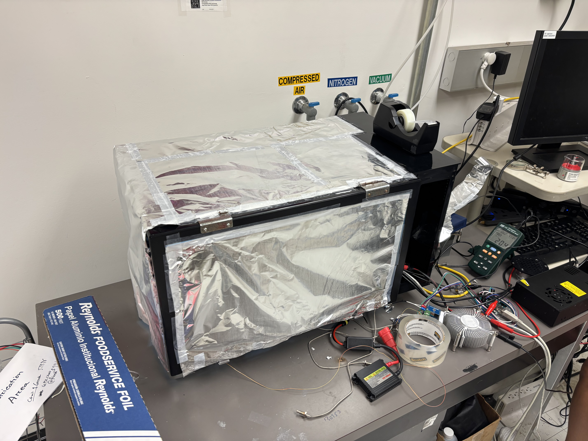
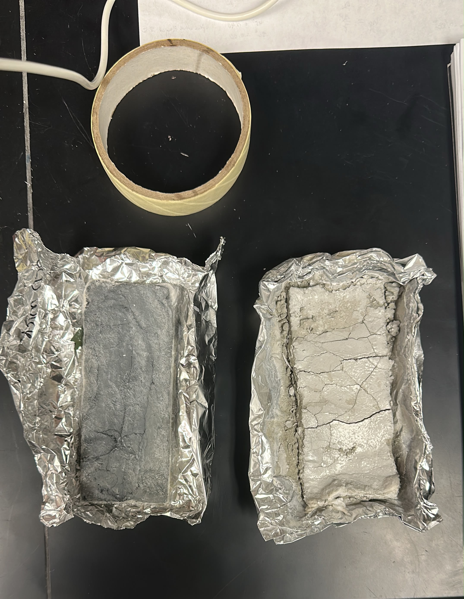
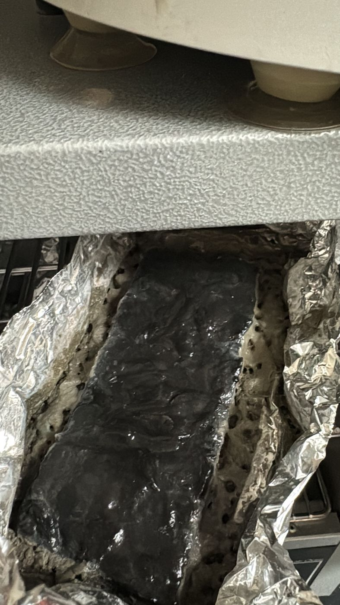
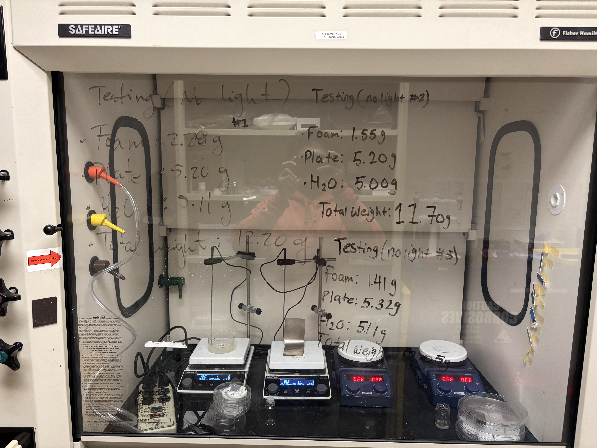

Solar photothermal propulsion
I lead lab operations for a solar photothermal propulsion program aimed at CubeSat maneuverability, covering prototype testing, CAD layout, mission modeling, and documentation. I fabricate the carbon nano-capillary foam specimens that drive light absorption and steam generation, then characterize them on a solar simulator: 3600-second runs logging mass loss against temperature and humidity, with linear regression on the weight trace to extract evaporation rate. Across four mix compositions the 20% cement foam reached 1.81 kg/m²/hr, and a reusability study on the same specimens found a one-time settling drop of about 14% after the first cycle followed by a stable plateau across three further cycles. I also machine the structural mounts, sensor fixtures, and thermal isolation hardware that keep chamber temperature data repeatable, and I contributed to the patent covering the propulsion test stand this work produced.
- Patent
- Contributed to a patent on the propulsion test stand
- Partners
- AFRL, UNP, industry
- Best rate
- 1.81 kg/m²/hr, R² > 0.998
- Target
- 4U, 6U, and 8U spacecraft


